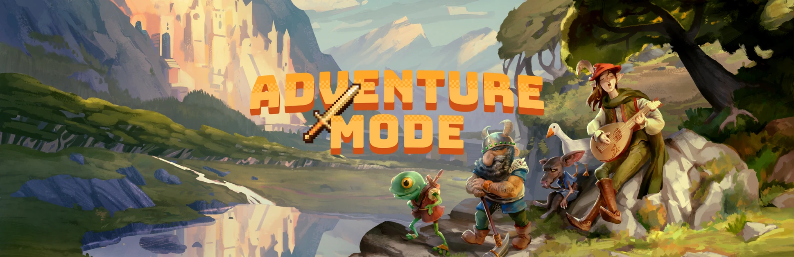

Главная | Страница 1 | Страница 2 | Страница 3 | Страница 4
В режиме искателя приключений вы создаёте персонажа (дварфа, человека, эльфа, семирида или порождение некроманта) и начинаете игру в одном из сгенерированных ранее миров. Здесь вы сможете выполнять задания лордов, убивать монстров, стать бардом, исследователем интересных мест, некромантом или даже зомби. Сможете посетить ваши заброшенные крепости и найти какие-нибудь оставшиеся сокровища, охраняемые её обитателями. В отличие от режима крепости, режим приключений — это roguelike игра с открытым миром, например как Rogue или NetHack, действие которой происходит в тех же процедурно сгенерированных мирах, что используются в режиме крепости, но здесь вы контролируете только одного персонажа в пошаговой манере, вместо управления группой существ в реальном времени.

Режим приключений доступен для игры в любом сгенерированном вами мире, в котором есть цивилизация с токеном [ALL_MAIN_POPS_CONTROLLABLE] (этот токен прописан дварфам, людям, и эльфам). Люди населяют города, деревни и замки, эльфы обитают в лесных прибежищах, дварфы расселились по глубинным городам, которые не всегда имеют прямого сообщения с поверхностью, горным крепостям, почти всегда соединяющимися с подземными тропами, а также по подножьям гор, заселив холмы, гоблины обычно обитают в темных крепостях и темных ямах. Кроме того, мир населен семиридами, являющимися наполовину людьми, наполовину животными, они зарождаются в дикой природе и могут присоединиться к любой из существующих цивилизаций, поселившись в ее поселениях. Людские поселки и города, а также дварфийские крепости, на данный момент, являются единственными местами с магазинами и рынками, кроме того в них есть таверны (которые, кстати, есть и в эльфийских поселениях). Если вы до этого строили свой форт в режиме крепости, приключенец может посетить его, но для этого придется "забросить" вашу крепость или "оставить" под управлением ИИ, в последнем случае вы сможете встретить в ней всех знакомых вам дварфов.